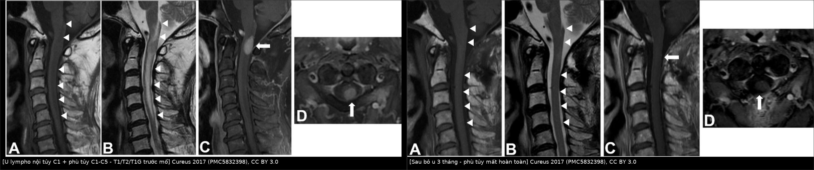
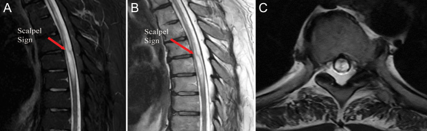
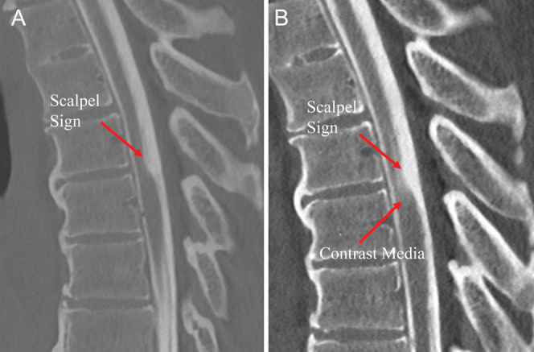
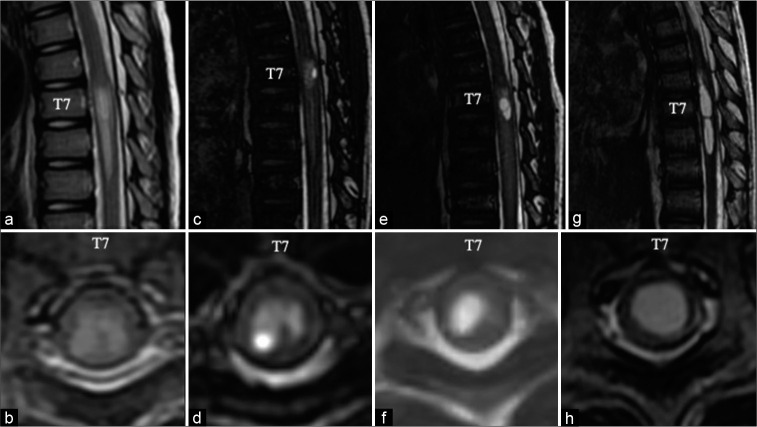
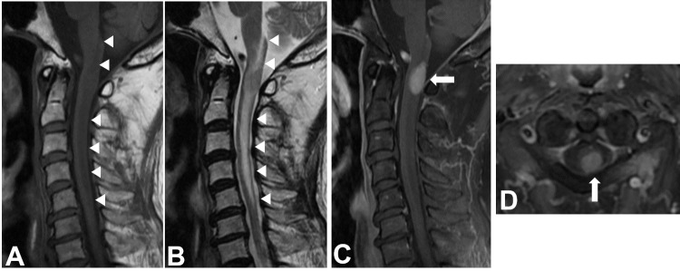

267 — Presyrinx: phù tủy HỒI PHỤC trước giãn tủy / The "presyrinx" state
Tags: pattern:phu-tuy pattern:tang-t2-tuy pattern:gian-tuy pattern:khong-choan-cho pattern:presyrinx vung:tuy-song vung:cot-song protocol:MRI-cot-song protocol:MRI-dong-hoc-csf protocol:CT-tuy-myelo protocol:MRI-T1G score:tJOA score:McCormick
Mức chắc chắn (certainty): tổng hợp y văn (literature synthesis) — 2 loạt ca nguyên văn (Fischbein 1999, AJNR 20:7–20, 5 ca người lớn, PMID 9974051; Goh 2008, Neurology 71:351–356, 6 trẻ, PMID 18565831) + 4 ca nguyên văn có ảnh (J Neurosurg Case Lessons 2024, PMC11337934; Korean J Neurotrauma 2019, PMC6826087; Cureus 2017, PMC5832398; Surg Neurol Int 2021, PMC8942189) + 2 ca có ảnh dùng cho chẩn đoán phân biệt (Clin Case Rep 2023, PMC10731126; J Clin Neurol 2023, PMC10622733) + 1 mô hình động học dịch não tủy (Neurol Med Chir 2024, PMC10918455). Không có thử nghiệm ngẫu nhiên, không có tỉ lệ chuyển dạng presyrinx → syrinx trên quần thể; chỗ suy luận được ghi rõ.
Câu chốt: presyrinx không phải một bệnh, mà là một TRẠNG THÁI — tủy giãn + T2 sáng lan dọc + T1 hơi tối, KHÔNG có khoang, xuất hiện khi dòng dịch não tủy (cerebrospinal fluid, CSF) bị tắc, và HỒI PHỤC sau khi giải phóng tắc. Ba câu quyết định: (1) có khoang dịch tự do chưa? — có = syrinx đã thành lập, tiên lượng xấu hơn hẳn; (2) có khối/ngấm thuốc không? — có = u nội tủy hoặc viêm tủy, không phải presyrinx; (3) có bằng chứng tắc dòng CSF không? — cine phase-contrast, CT tủy thì muộn, hoặc chính đáp ứng sau giải áp. Đây là cửa sổ duy nhất còn chữa khỏi: giải áp lúc còn presyrinx thì tủy về bình thường (5/5 ca Fischbein), còn để thành syrinx thì mổ chỉ xẹp được 12,2–100%, trung bình 29,6% (bài 255).
1. Tổng quan bệnh học – cơ chế hình ảnh (TẠI SAO)
1.1 Định nghĩa và nguồn gốc khái niệm
- Định nghĩa hình ảnh (Fischbein 1999): giãn tủy + T1 và T2 kéo dài trong nhu mô, KHÔNG có cavitation (khoang), kèm bằng chứng tắc/đổi dòng CSF, không có u nội tủy và không có biến cố mạch tủy. Tất cả 5/5 ca hồi phục giãn tủy và bình thường hoặc cải thiện tín hiệu sau can thiệp giải áp; 1/5 ca (dính màng nhện nặng) tiến triển thành syrinx khi dòng CSF vẫn còn tắc sau mổ — đây chính là bằng chứng "presyrinx chỉ hồi phục khi hết tắc".
- Ở trẻ (Goh 2008): 6 trẻ, 4 Chiari I + 2 Chiari II; đặc điểm MRI là T2 kéo dài, T1 kéo dài MỜ NHẸ, tủy giãn, không có khoang; cine phase-contrast ở 3 trẻ cho thấy dòng CSF tại lỗ chẩm giảm nặng hoặc mất; 5 trẻ được giải áp, 3/3 trẻ có ảnh sau mổ hồi phục hoàn toàn presyrinx; 2 trẻ có triệu chứng tủy và hết sau mổ. Trước bài này y văn chỉ có 3 ca nhi.
- Vì sao khái niệm này quan trọng: nó đảo ngược tiên lượng. Cùng một ảnh "tủy sáng + giãn" có thể là presyrinx (chữa được), syrinx (đã muộn), u nội tủy (phải mổ u) hoặc myelomalacia (không hồi phục) — bốn hướng xử trí khác nhau hoàn toàn.
1.2 Cơ chế: tắc dòng CSF → chênh áp → nước vào nhu mô tủy
- Tắc dòng CSF ở một mức (Chiari, màng nhện lưng, nang nhện, dính màng nhện sau viêm/xuất huyết, hẹp ống sống, shunt rối loạn, uống trung tâm dày dính) tạo chênh áp giữa khoang dưới nhện trên và dưới chỗ tắc.
- Chênh áp đẩy CSF vào nhu mô tủy theo khoảng quanh mạch (Virchow–Robin) và ống trung tâm (central canal). Nước ngoại bào tăng → phù nhu mô → tủy giãn và T2 kéo dài. Đây là phù, chưa phải khoang: chưa có vách, chưa có túi dịch tự do.
- Mô hình "van một chiều" (direction-selective resistance): một cấu trúc chỉ cản dòng CSF một chiều sẽ làm áp lực trong ống trung tâm tăng dần theo TỪNG chu chuyển tim, không cân bằng lại — mô phỏng động học này tái tạo được hiện tượng dịch ứ và "bơm" vào tủy (Chang 2024, PMC10918455). Đây là mô hình giải thích, chưa phải bằng chứng đo trực tiếp ở người.
- Vì sao có ca thành syrinx, có ca không: Fischbein đặt giả thuyết "độ thông thoáng của ống trung tâm" (competence of the central canal) — ống trung tâm còn chắc thì nước chỉ ngấm vào nhu mô (presyrinx, hồi phục); khi ống trung tâm giãn ra thì tạo khoang chứa dịch (syrinx). Ca trẻ của Shimizu cho thấy rõ chuỗi thời gian: phù tủy T7–T9 lúc 6 tuổi → hang nhỏ ở sừng sau phải lúc 7,25 tuổi → syrinx trưởng thành lúc 10 tuổi, dù đã tháo xoắn tủy 2 lần (3 tuần tuổi và 7 tuổi) (PMC8942189).
- Hệ quả lâm sàng: triệu chứng do chèn ép + mất chức năng nhu mô do phù, chưa do phá hủy. Vì vậy giải áp sớm hồi phục được chức năng, còn chờ tới khi có khoang thì đã mất nhu mô.
1.3 Vật lý ảnh: vì sao T2 sáng, T1 hơi tối, và vì sao KHÔNG thấy khoang
| Chuỗi xung / kỹ thuật | Presyrinx | Giải thích vật lý (TẠI SAO) |
|---|---|---|
| T2W sagittal | Tăng tín hiệu lan dọc ≥ 2–3 đốt, bờ mờ, tủy giãn | Nước ngoại bào tăng làm T2 kéo dài; nước tự do trong mô phản hồi chậm nên tín hiệu sáng |
| T1W | Giảm nhẹ, MỜ ("mild indistinct T1 prolongation" — Goh 2008) | Phù làm tăng nước ngoại bào → T1 kéo dài, nhưng ít hơn nhiều so với hoại tử/myelomalacia; mờ vì phù lan tỏa, không khu trú |
| T1W + gadolinium | Không ngấm (trừ khi kèm viêm) | Hàng rào máu–tủy còn nguyên; phù không phải mô tân sinh nên không có mạch máu rò |
| DWI/ADC | Không hạn chế khuếch tán rõ (phù vận chuyển) — số liệu định lượng ở người chưa đủ, ghi "chưa rõ" | Phù ngoại bào làm ADC tăng nhẹ; khác nhồi máu tủy (ADC giảm) và áp-xe |
| Khoang dịch | KHÔNG có | Chưa tích đủ dịch tự do để tạo túi; trên T2 không thấy vùng tín hiệu bằng đúng CSF với bờ rõ |
| CT tủy (myelography) | Cản quang đi vào nhu mô tủy ở thì muộn | Chứng minh thông thương giữa khoảng dưới nhện và nhu mô/ống trung tâm — dấu hiệu trực tiếp của rối loạn dòng CSF (Halloran 2024, Hình 2) |
| Cine phase-contrast MRI | Dòng CSF giảm nặng hoặc mất tại mức tắc (3/3 trẻ trong Goh 2008) | Đo vận tốc dòng theo chu chuyển tim; tắc → biên độ dòng giảm/mất |
1.4 Ngưỡng định lượng trụ cột (mọi số lấy từ nguồn, không suy diễn)
| Đại lượng | Con số | Nguồn |
|---|---|---|
| Số ca presyrinx được mô tả | 5 người lớn (1999) · 6 trẻ (2008) · trước 2008 chỉ 3 ca nhi | PMID 9974051; PMID 18565831 |
| Hồi phục sau giải áp | 5/5 hết giãn tủy, tín hiệu bình thường/cải thiện · 3/3 có ảnh sau mổ hết presyrinx | PMID 9974051; PMID 18565831 |
| Tiến triển thành syrinx | 1/5 khi dòng CSF còn tắc · 1 ca nhi tiến triển dù tháo xoắn 2 lần | PMID 9974051; PMC8942189 |
| Thời gian presyrinx → syrinx ở ca nhi | 6 tuổi (phù T7–T9) → 7,25 tuổi (hang) → 10 tuổi (syrinx) | PMC8942189 |
| Mức giãn tủy trong ca hydrocephalus | Tủy giãn + T2 sáng C1–T5, không có khoang; Evan's ratio 0,332; tụt hạnh nhân tiểu não 13 mm | PMC6826087 |
| Hồi phục sau dẫn lưu não thất–ổ bụng | Tín hiệu tủy bắt đầu bình thường ngay sau đặt shunt; > 4 năm không tái phát | PMC6826087 |
| Hồi phục sau bỏ u nội tủy | Phù tủy mất hoàn toàn trên MRI 3 tháng sau mổ | PMC5832398 |
| Hồi phục phù tủy do hẹp ống sống | JOA 10 → 13 (3 tháng) → 16 (2 năm); phù mất hoàn toàn lúc 2 năm | PMC10731126 |
| Xẹp syrinx sau mổ (để so sánh — đã muộn) | 12,2–100%, trung bình 29,6% | bài 255 (PMC12518900) |
| Tỉ lệ "giãn tủy vô căn" thật ra do màng nhện ẩn | 1,4% (15/1.039) | bài 255 (PMC12518900) |
2. Mẫu hình + chẩn đoán phân biệt theo VỊ TRÍ TẮC (Gamut)
Mẫu hình chốt: tủy cổ–ngực giãn + T2 sáng lan dọc ≥ 2–3 đốt, T1 hơi tối mờ, không khoang, không ngấm thuốc, kèm một nguyên nhân tắc dòng CSF ở gần đó; bệnh nhân triệu chứng tủy tiến triển hàng tháng; ảnh hồi phục sau giải áp.
2.1 Gamut theo vị trí tắc (câu hỏi số 1: tắc ở đâu?)
| Vị trí tắc | Thực thể | Manh mối trên ảnh |
|---|---|---|
| Lỗ chẩm | Chiari I/II, nang nhện hố sau, dính màng nhện sau viêm màng não | Tụt hạnh nhân tiểu não, dòng CSF lỗ chẩm mất trên cine PC, giãn não thất kèm theo |
| Ống sống cổ–ngực | Hẹp ống sống, thoát vị đĩa, dày dây chằng vàng | Tủy giãn đúng mức chèn ép, ngấm thuốc khu trú tại mức hẹp nhất (PMC10731126) |
| Màng nhện lưng/ngực | Màng nhện lưng (bài 255), nang nhện lưng | Dấu scalpel, tủy đẩy ra trước, dải màng trên 3D-CISS |
| Toàn bộ khoang dưới nhện | Dính màng nhện lan tỏa sau viêm màng não, xuất huyết dưới nhện, lao màng não | Mất tín hiệu CSF xung quanh tủy, tủy dính thành, giãn tủy nhiều đoạn |
| Hệ thống CSF phía trên | Rối loạn chức năng shunt, hydrocephalus, tụt hạnh nhân do rò CSF (SIH) | Giãn não thất hoặc dấu SIH; hồi phục sau sửa shunt/EBP (PMC6826087, PMC10622733) |
| Tủy bị neo (tethered cord) | Lipoma tủy, thoát vị tủy–màng tủy | Nón tủy thấp, mỡ trong ống sống; presyrinx có thể tiến triển dù đã tháo xoắn (PMC8942189) |
| Nội tủy (giả presyrinx) | U nội tủy (lymphoma, ependymoma, astrocytoma), viêm tủy ngang | Khối + ngấm thuốc, phù lệch, không có tắc dòng CSF phía trên (PMC5832398) |
2.2 Gamut theo TUỔI (câu hỏi số 2: ai?)
- Trẻ < 16 tuổi: Chiari I/II là nguyên nhân số 1 (4/6 và 2/6 trong Goh 2008); tiếp theo là thoát vị tủy–màng tủy/lipoma và shunt rối loạn sau viêm màng não.
- Người lớn 40–70 tuổi: màng nhện lưng (bài 255), hẹp ống sống cổ, dính màng nhện sau chấn thương/xuất huyết, nang nhện; ở người trẻ sau chấn thương nhẹ phải nghĩ SIH (PMC10622733).
- Sau chấn thương tủy: phân biệt presyrinx do tắc với SPAM (subacute posttraumatic ascending myelopathy) — SPAM chiếm 0,42–1% chấn thương tủy, tử vong ~10%, không hồi phục (PMC5504449).
2.3 Ba câu hỏi tại chỗ đọc phim (dùng như checklist)
- Có khoang không? — nếu có vùng tín hiệu bằng đúng CSF, bờ rõ, có thể có vách → syrinx, không phải presyrinx.
- Có khối/ngấm thuốc không? — khối + ngấm → u; ngấm mờ dọc + LETM → viêm tủy; không ngấm + không khối → nghĩ presyrinx.
- Có tắc dòng CSF không, và ở đâu? — tìm từ lỗ chẩm xuống tới nón tủy; đừng dừng ở đoạn tủy giãn (cạm bẫy "satisfaction of search").
3. Bảng so sánh phân biệt (ma trận đối chiếu)
| Thực thể (entity) | Hình ảnh điển hình | Chốt vào (rule-in) | Chốt loại (rule-out) | Gợi ý xác nhận |
|---|---|---|---|---|
| Presyrinx | Tủy giãn + T2 sáng lan dọc, T1 hơi tối mờ, không khoang, không ngấm, có nguyên nhân tắc CSF | Có tắc dòng CSF + không khoang + không khối; hồi phục sau giải áp | Có khoang rõ hoặc khối ngấm thuốc → không phải presyrinx | Cine PC CSF; CT tủy thì muộn; MRI sau giải áp 3 tháng |
| Syrinx thành lập | Khoang tín hiệu = CSF, bờ rõ, ± vách, tủy có thể không còn giãn | Vùng tín hiệu CSF thực sự trong nhu mô | T2 sáng đồng nhất không bờ, không có vùng dịch → presyrinx/phù | T1/T2 so sánh tín hiệu với CSF trong ống sống |
| Myelomalacia | T1 tối rõ + teo tủy, T2 sáng, không giãn | Teo + T1 tối đậm, tiền sử chấn thương/xạ/thiếu máu | Tủy giãn, T1 chỉ hơi tối → còn phù hồi phục | So phim cũ; không có đáp ứng sau giải áp |
| U nội tủy (lymphoma, ependymoma) | Khối ngấm thuốc, phù lệch trên/dưới, có thể giãn tủy | Khối + ngấm thuốc, phù không cân xứng | Phù đối xứng, không khối, không ngấm → không phải u | MRI T1G; cắt/sinh thiết (ca lymphoma C1, PMC5832398) |
| Viêm tủy ngang (NMOSD/MOG) | LETM ≥ 3 đốt, phù, ± ngấm mờ, ± dấu H trên axial | LETM + ngấm + bối cảnh viêm (đau, sốt, area postrema) | Không tắc CSF, không hồi phục nhanh sau giải áp | AQP4/MOG, dịch não tủy, MRI não |
| Phù tủy do hẹp ống sống | T2 sáng đúng mức hẹp nhất, ± ngấm khu trú tại đó, ít lan xa | Ngấm thuốc khu trú đúng chỗ chèn ép, hẹp ống sống rõ | Lan dọc qua nhiều mức không tương ứng hẹp → nghĩ presyrinx/viêm | MRI động học cột sống; đáp ứng sau giải ép |
| SPAM sau chấn thương | T2 sáng lan LÊN ≥ 4 đốt trong vài tuần sau chấn thương, tủy giãn | Tiền sử chấn thương + lan lên nhanh, không có tắc CSF mới | Có tắc CSF chữa được + hồi phục → presyrinx | Theo dõi; tiên lượng xấu, tử vong ~10% |

Trái: khối ngấm thuốc ở C1 (mũi tên trắng) + phù T2 lan từ hành não tới C5 (đầu mũi tên) — đây là giả presyrinx do u, không phải presyrinx do tắc CSF. Phải: 3 tháng sau bỏ u, phù tủy mất hoàn toàn. Ảnh ghép letterbox, giữ nguyên tỉ lệ. Nguồn: Cureus 2017 (PMC5832398), CC BY 3.0.3.1 Hai dấu hiệu "chốt" của presyrinx (và giới hạn của chúng)
- Cản quang trong nhu mô tủy trên CT tủy thì muộn: ca 57 tuổi của Halloran — CT tủy sớm chỉ thấy dấu scalpel, CT tủy muộn thấy cản quang trong tủy, chứng minh CSF thông với nhu mô/ống trung tâm. Giới hạn: syrinx thông thương với ống trung tâm cũng có thể nhận cản quang → dấu này nói "có thông thương", không nói "còn hồi phục".
- Hồi phục sau giải áp: là tiêu chuẩn vàng hồi cứu — không dùng để quyết định mổ, nhưng là bằng chứng mạnh nhất khi đọc lại. Đừng chờ hồi phục để chẩn đoán: mỗi tuần chờ là thêm nguy cơ tạo khoang.
3.2 Ảnh chốt dấu scalpel kèm presyrinx

Sagittal STIR (A), sagittal T2 (B) và axial T2 (C): lõm mặt lưng tủy + tủy đẩy ra trước tại mức màng nhện lưng (mũi tên đỏ), tủy phía trên giãn nhẹ. Đây là nguyên nhân tắc — presyrinx là hệ quả, không phải tổn thương nguyên phát. Nguồn: J Neurosurg Case Lessons 2024 (PMC11337934), CC BY-NC-ND 4.0, nguyên bản.4. Protocol chụp + cách phân tầng xử trí
4.1 Protocol MRI (tối thiểu để không bỏ presyrinx)
- MRI toàn trục cột sống (không chỉ đoạn có triệu chứng): sagittal T2 3 mm, axial T2 3 mm tại mức tổn thương, T1 trước và sau gadolinium (bắt buộc — để loại u/viêm), ± STIR để phân biệt mỡ/phù.
- Cine phase-contrast CSF flow tại lỗ chẩm và mức nghi tắc: dòng giảm/mất hỗ trợ chẩn đoán (3/3 ca nhi trong Goh 2008). Thông số VENC cụ thể tùy máy — chưa chuẩn hóa, ghi "chưa rõ" nếu không có trong protocol địa phương.
- CT tủy cản quang khi MRI không kết luận hoặc nghi màng nhện/dò: chụp thì sớm VÀ thì muộn, tìm cản quang trong tủy (PMC11337934).
- Siêu âm trong mổ sau mở màng cứng: xác nhận màng/dải, đánh giá tủy phù và phục hồi dòng CSF ngay tại bàn mổ (PMC11337934).
- Theo dõi sau giải áp: MRI 3 tháng và 12 tháng; ghi tJOA (tủy cổ) hoặc McCormick (tủy ngực) trước và sau mổ.
4.2 Phân tầng xử trí (không có RADS cho tủy; dùng thuật toán 3 bước)
flowchart TD
A["T2 sáng lan dọc trong tủy + tủy giãn"] --> B{"Có khoang tín hiệu bằng CSF?"}
B -->|Có| C["Syrinx đã thành lập<br/>tìm và xử lý nguyên nhân tắc"]
B -->|Không| D{"Có khối hoặc ngấm thuốc?"}
D -->|Có| E["U nội tủy hoặc viêm tủy<br/>MRI T1G + DWI + dịch não tủy"]
D -->|Không| F{"Có tắc dòng CSF trên cine PC hoặc CT tủy?"}
F -->|Có| G["PRESYRINX<br/>giải áp trong 2-4 tuần"]
F -->|Không| H{"T1 tối rõ + teo tủy?"}
H -->|Có| I["Myelomalacia<br/>không hồi phục"]
H -->|Không| J["Tìm nguyên nhân khác<br/>SIH, chuyển hóa, xạ trị, SPAM"]
- Có tắc + không khoang + không khối = presyrinx → giải áp sớm (mở màng cứng/cắt dải màng, giải ép, sửa shunt, tháo xoắn). Không "theo dõi 6 tháng" — đó là khoảng thời gian đủ để phù thành khoang.
- Đã có khoang = syrinx: vẫn phải xử lý nguyên nhân tắc (không chỉ dẫn lưu syrinx); kết cục xẹp chỉ 29,6% trung bình (bài 255).
- Có khối/ngấm = u hoặc viêm: đi theo bài 220/215/226 — không giải áp mù.
4.3 Kết cục đã báo cáo (để tư vấn, không hứa hẹn)
| Bối cảnh | Can thiệp | Kết cục |
|---|---|---|
| Chiari I/II (6 trẻ) | Giải áp hố sau (5 trẻ) | 3/3 có ảnh sau mổ hết presyrinx; triệu chứng tủy hết |
| Hydrocephalus + Chiari I sau chấn thương nhẹ | Dẫn lưu não thất–ổ bụng | Tín hiệu tủy bình thường ngay sau đặt shunt; > 4 năm không tái phát |
| U lympho nội tủy C1 | Bỏ u + hóa–xạ | Phù tủy mất hoàn toàn sau 3 tháng; sống > 2 năm |
| Hẹp ống sống cổ | Giải ép | JOA 10 → 13 → 16; phù mất hoàn toàn sau 2 năm |
| Lipoma/tethered cord | Tháo xoắn 2 lần | Vẫn tiến triển thành syrinx — giải áp không phải lúc nào cũng đủ |
5. Biến thể bình thường và cạm bẫy
- "T2 sáng trong tủy" không đồng nghĩa presyrinx: phân biệt phù do hẹp ống sống (khu trú đúng mức hẹp, ngấm thuốc tại chỗ — PMC10731126) với phù do tắc CSF lan tỏa. Điều trị khác nhau: giải ép tại chỗ vs giải phóng dòng CSF.
- Myelomalacia đọc nhầm thành presyrinx: nếu T1 tối đậm + teo tủy, mổ giải áp không làm tủy hồi phục — đừng hứa "mổ xong tủy về bình thường". Ngược lại, gọi presyrinx là myelomalacia sẽ bỏ mất cửa sổ chữa khỏi.
- U nội tủy giả presyrinx: ca lymphoma C1 (PMC5832398) có phù lan từ hành não đến C5 trông như presyrinx; khối ngấm thuốc là chốt loại. Sinh thiết mù một "phù tủy" có thể bỏ sót u.
- SPAM (subacute posttraumatic ascending myelopathy): tổn thương lan LÊN vài tuần sau chấn thương tủy, 0,42–1% ca chấn thương tủy, tử vong ~10%, không hồi phục — không phải presyrinx, dù ảnh giống.
- SIH: rò CSF tự phát gây tụt hạnh nhân + phù tủy, 30% khỏi bảo tồn (PMC10622733) — không mổ cột sống, điều trị bằng nằm/EBP.
- Satisfaction of search: thấy syrinx/presyrinx rồi dừng, bỏ qua màng nhện lưng ở trên (bài 255) — luôn đọc từ lỗ chẩm xuống và tìm dải màng trên 3D-CISS/CT tủy.
- Ảnh giả: phù tủy do artifact chuyển động/dị vật kim loại ở cột sống ngực — đối chiếu axial và chuỗi xung khác trước khi kết luận.
6. Tự lượng giá — Blind Quiz
Ca 1 — Nam 57 tuổi, yếu hai chân 10 năm, MRI ban đầu bị gọi là "myelomalacia + syringomyelia". CT tủy sớm (A) và muộn (B):

- Gợi ý: dấu scalpel ở mặt lưng tủy; cấu trúc tăng đậm độ trong nhu mô tủy ở thì muộn.
- Câu hỏi: (1) Cấu trúc tăng đậm độ trong tủy là gì? (2) Vì sao nó chứng minh rối loạn dòng CSF? (3) Nó loại trừ hay không loại trừ u?
Bấm để hiện đáp án (findings + chẩn đoán)
- Findings: (A) thì sớm: lõm mặt lưng tủy + tủy đẩy ra trước (scalpel sign); (B) thì muộn: cản quang trong nhu mô tủy (mũi tên "contrast media") dưới mức dải màng.
- Chẩn đoán: presyrinx do màng nhện lưng gây tắc dòng CSF; cản quang vào tủy chứng minh thông thương khoảng dưới nhện ↔ nhu mô/ống trung tâm, tức CSF bị "ép" vào tủy.
- Phản biện: dấu này không loại trừ u — u cũng có thể ngấm thuốc; phải dựa vào khối + ngấm thuốc trên MRI T1G, không có ở ca này. Mổ giải áp → bệnh nhân cải thiện.
- Nguồn ảnh: J Neurosurg Case Lessons 2024 (PMC11337934), CC BY-NC-ND 4.0.
Ca 2 — Bé trai có lipoma/tethered cord, MRI T7 ở 4 thời điểm (a–h):

- Gợi ý: hàng trên là sagittal T2, hàng dưới là axial T2 tại T7; chú ý bờ tổn thương và vùng tín hiệu ở sừng sau.
- Câu hỏi: (1) Ở thời điểm đầu, tổn thương có khoang chưa? (2) Nó khu trú ở đâu trên axial? (3) Điều gì xảy ra sau 2 lần tháo xoắn tủy?
Bấm để hiện đáp án (findings + chẩn đoán)
- Findings: lúc 6 tuổi — T2 sáng khu trú trong CHẤT XÁM tủy T7–T9, không có khoang (a, b) = presyrinx; 7,25 tuổi — hang nhỏ ở sừng sau phải lan dần ra chất xám bên phải (c, d, e, f); 10 tuổi — syrinx trưởng thành (g, h).
- Chẩn đoán: presyrinx tiến triển thành syrinx dù đã tháo xoắn tủy 2 lần (3 tuần và 7 tuổi) — vì tắc dòng CSF vẫn còn.
- Bài học: presyrinx là giai đoạn còn hồi phục, nhưng không phải cứ mổ là hết — phải giải quyết đúng nguyên nhân tắc, và theo dõi MRI định kỳ.
- Nguồn ảnh: Surg Neurol Int 2021 (PMC8942189), CC BY-NC-SA 4.0, nguyên bản.
Ca 3 — Nam 79 tuổi, liệt nửa người trái, MRI cổ:

- Gợi ý: chú ý khối ở C1 (mũi tên) và vùng T2 sáng lan từ hành não đến C5 (đầu mũi tên).
- Câu hỏi: (1) Đây là presyrinx hay "giả presyrinx"? (2) Dấu nào chốt? (3) Xử trí khác presyrinx thế nào?
Bấm để hiện đáp án (findings + chẩn đoán)
- Findings: khối nội tủy C1 đồng tín hiệu T1/T2, ngấm thuốc đồng nhất (C), kèm phù T2 lan từ hành não tới C5; axial (D) cho thấy khối choán gần hết tiết diện tủy.
- Chẩn đoán: u lympho nội tủy (DLBCL) — giả presyrinx; phù là phù quanh u, không phải do tắc CSF. Sau bỏ u toàn bộ, phù mất hoàn toàn sau 3 tháng (ảnh ghép mục 3).
- Chốt loại: khối + ngấm thuốc → không phải presyrinx; nếu chỉ giải áp mà không cắt u thì đã bỏ sót u ác.
- Nguồn ảnh: Cureus 2017 (PMC5832398), CC BY 3.0.
Bài liên quan chéo
- 255 – Màng nhện lưng & dấu "scalpel" — nguyên nhân tắc hay gặp nhất ở tủy ngực
- 254 – Giãn tủy sau chấn thương tủy sống — khi đã thành syrinx
- 226 – Tủy mềm không chấn thương: nhồi máu, SDAVF, NMO, xạ trị
- 268 – Bệnh tủy do xạ trị — phù tủy trong trường chiếu, không hồi phục
- 220 – Ống sống 3 khoang: thoát vị đĩa, u tủy, viêm tủy
- 215 – Mất myelin: MS, NMOSD, ADEM
- 200 – Tổng quan hệ Thần kinh
Ảnh
267_presyrinx-scalpel_MRI_PMC11337934-F1.jpg,267_presyrinx_CT-myelo_PMC11337934-F2.jpg— CC BY-NC-ND 4.0, nguyên bản.267_presyrinx-tien-trien_MRI_PMC8942189-F2.jpg— CC BY-NC-SA 4.0, nguyên bản.267_presyrinx-u-lymphoma_MRI_PMC5832398-F1.jpg,267_presyrinx-sau-mo_MRI_PMC5832398-F4.jpg— CC BY 3.0; ảnh ghépcomposite_presyrinx-u-truoc-sau.jpgtạo bằngtools/make_composite.py.- Nguồn + giấy phép + tác giả từng ảnh:
images/CREDITS.md; link bài gốc:sources.md.
Không dùng để chẩn đoán độc lập khi chưa có người hướng dẫn.